Retaining telecommunications customers is critical. It is widely accepted that the cost of retention is significantly lower than the cost of acquisition. In this project, I utilized the IBM Telco Customer Churn dataset and transitioned traditional Pandas-based survival models into a scalable PySpark architecture to predict at what point in time specific customers are at risk of cancellation, ultimately projecting their Customer Lifetime Value (CLV).
02. Non-parametric Analysis: Kaplan-Meier Estimator
To account for right-censored data (active subscribers who have not yet churned), the KaplanMeierFitter was applied. Based on the model fitting, the Median Survival Time for this cohort is exactly 34.0 months, indicating that 50% of the month-to-month internet subscribers are expected to churn within this timeframe.
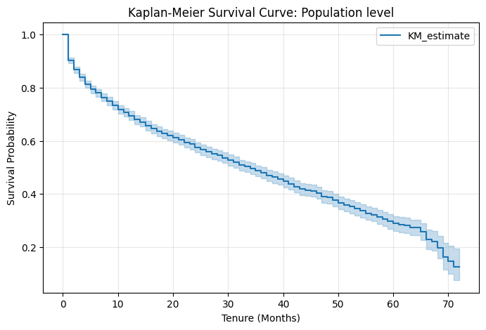
Covariate-Level Analysis
Pairwise Log-Rank tests were executed to evaluate the null hypothesis across subgroups. Variables such as gender (\(p \approx 0.204\)) failed to reject the null hypothesis. Conversely, factors like OnlineBackup (\(p \approx 2.62 \times 10^{-67}\)) demonstrated extreme statistical significance.
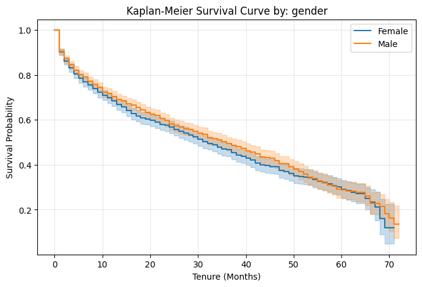
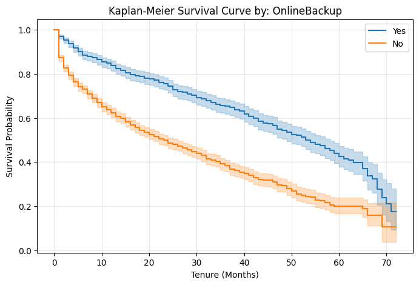
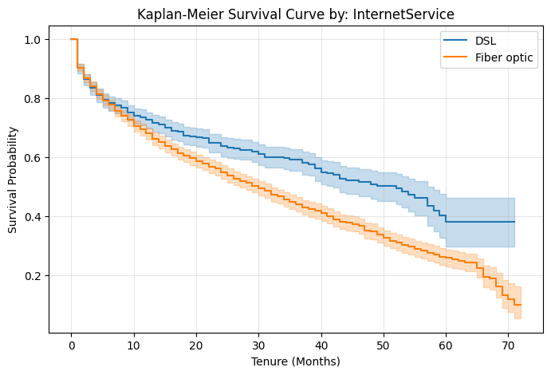
03. Semi-parametric Analysis: Cox Proportional Hazards
The CPH model estimates the hazard ratio (HR), representing the difference in failure probability between groups. The model achieved a Concordance index of 0.64. Notably, OnlineBackup_Yes exhibits a strong protective effect, representing a 54% reduction in churn risk compared to the baseline.
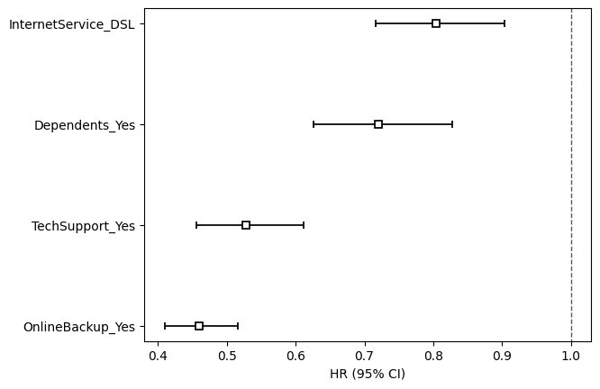
Assumption Verification (Schoenfeld Residuals & Log-log Plots)
A fundamental requirement for CPH is the proportionality of hazards over time. As shown below, the crossing lines in the Log-log plots and trends in residuals indicate time-dependent hazards for certain services, requiring careful model interpretation.
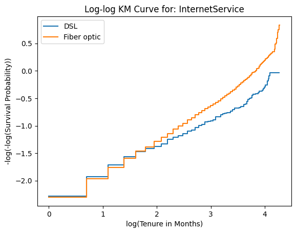
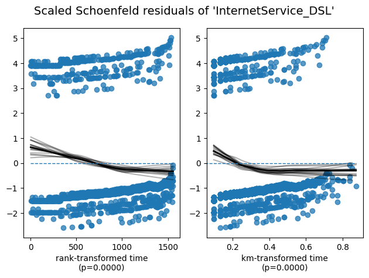
04. Parametric Analysis: Accelerated Failure Time (AFT)
The Accelerated Failure Time (AFT) model is fully parametric. We implemented the LogLogisticAFTFitter. Unlike hazard ratios, AFT models quantify the effect of covariates as "acceleration factors," which speed up or slow down the time until the churn event occurs.
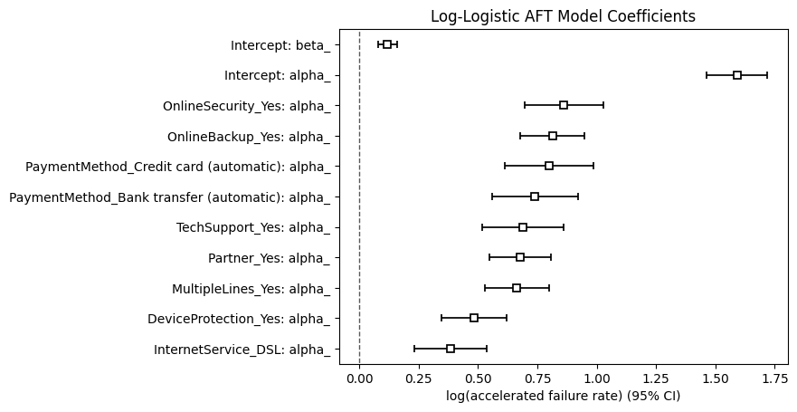
05. Business Application: Customer Lifetime Value (CLV)
The ultimate value of survival analysis lies in translating predictive statistics into financial decision-making tools. By leveraging the survival probabilities generated by the final Cox Proportional Hazards model, we projected a customer's monetary contribution over time.
Below is an example projection for a baseline customer profile (computed with a 10% Internal Rate of Return). The interface parameters and the resulting dynamic projection table illustrate how predictive outputs map to Expected Monthly Profits and Net Present Value (NPV).
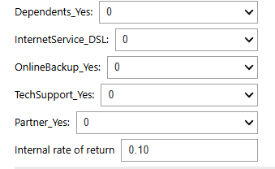
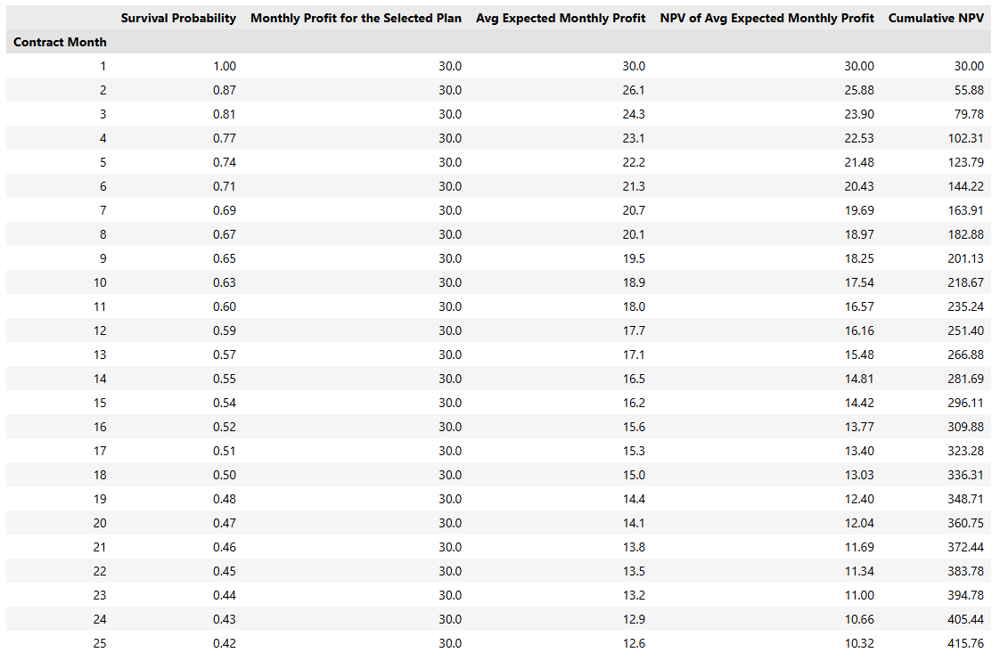
A baseline simulation reveals that a customer generates approximately $508 over 36 months. This establishes a data-driven "ceiling" for Customer Acquisition Costs (CAC).
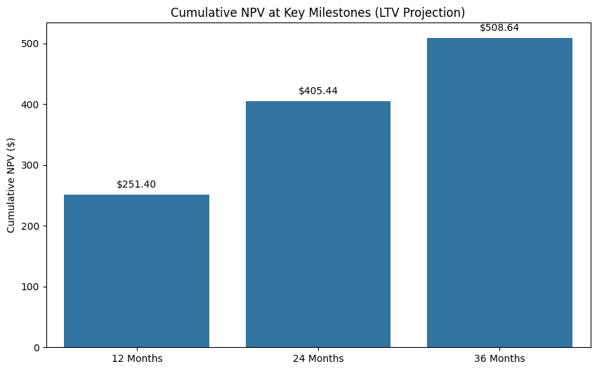
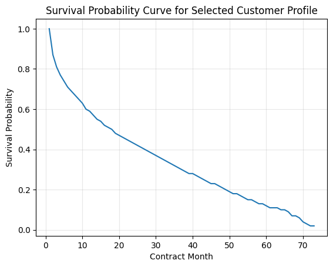